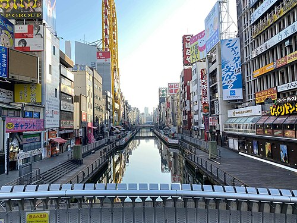
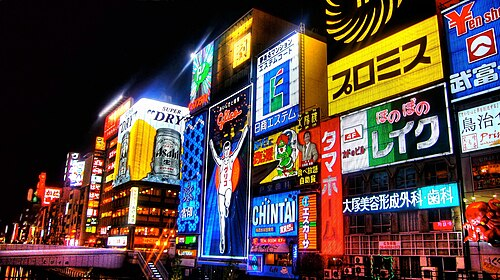
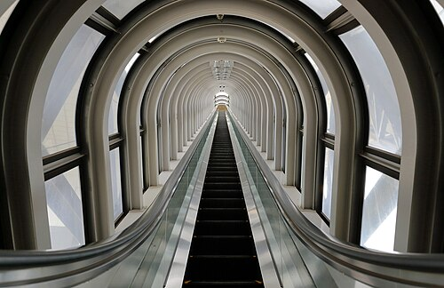
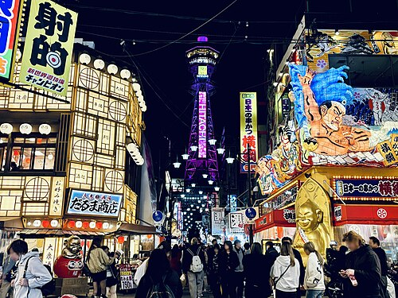
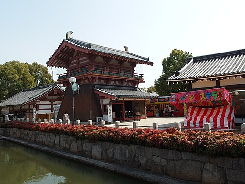
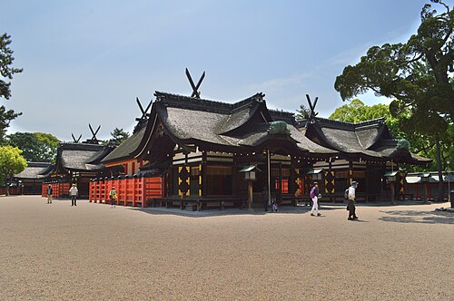
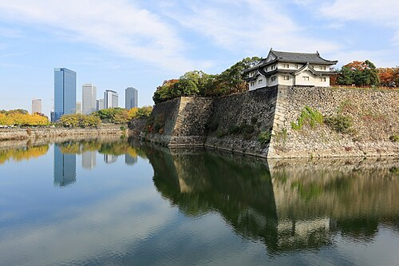

Multimédia
Nesta página encontra conteúdos multimédia.
Fotografias








Fotografias: Wikimedia Commons — Syced (CC0), 32linesky (CC BY-SA 4.0), Joop Amsterdam (CC BY 2.0), Martin Falbisoner (CC BY-SA 4.0), Sakai Yayoi (CC0), Guilhem Vellut (CC BY 2.0) e Saigen Jiro (CC0). Imagem do topo: Kaiza96 (CC BY-SA 3.0).
Vídeo
Poesia
Osaka, cozinha do Japão,
o vapor do takoyaki sobe ao céu;
em Dotonbori o néon vira canção
e a noite veste-o como um véu.
No castelo, as sakuras vão caindo
sobre os fossos onde o tempo adormeceu;
quem chega cansado acaba sorrindo,
e, ao partir, já a saudade o prendeu.